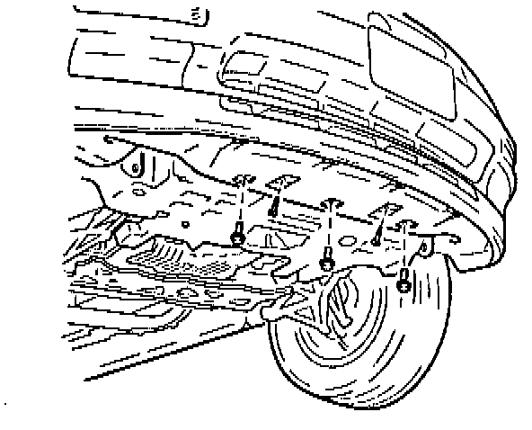
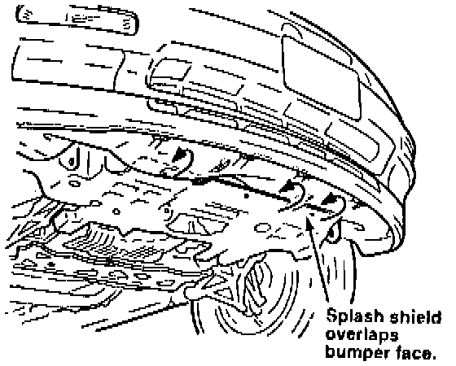
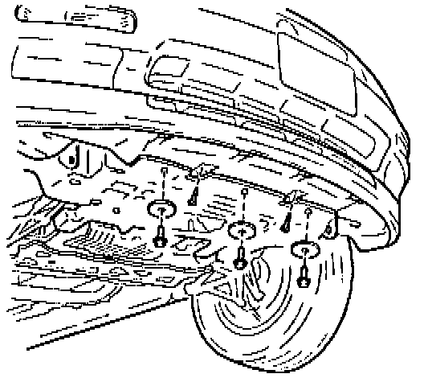

Front Bumper Face - Pulls Loose
YEAR1991 - 94
MODEL
LEGEND
VIN APPLICATION
ALL
BULLETIN NO
94-006
June 21, 1994
Front Bumper Face Pulls Loose
PROBLEM
The lower bumper face pulls loose from its mounts if it comes in contact with a curb, parking lot divider, or similar object when the car is backing up.
CORRECTIVE ACTION
Reverse the overlap of the lower bumper face and the splash shield, and reinforce the mounting points with large washers.
1. Raise the vehicle on a hoist.
2. Remove the two lower bumper face plastic mounting fasteners.

3. Remove the three 6 mm bolts that mount the front of the splash shield to the subframe (visible through the square holes in the lower bumper face).

4. Pull out the front edge of the splash shield, and place it on top of the lower bumper face.
5. Reinstall the two plastic fasteners in the lower bumper face. Replace them if they are damaged (see PARTS INFORMATION).

6. Reinstall the three 6 mm bolts, using a large washer on each bolt to reinforce the mounting point (see PARTS INFORMATION).
PARTS INFORMATION
Washer: P/N 52621-SB2-004 (3 required)
Plastic fastener: P/N 91502-SPO-003
WARRANTY CLAIM INFORMATION
In warranty:
The normal warranty applies.
Out of warranty:
Any repair performed after warranty expiration may be eligible for goodwill consideration by the District Service Manager or your Zone Office. You must request consideration, and get a decision, before starting work.
Operation number: 810210
Flat rate time: 0.8 hour
Failed P/N: 71101-SPO-A10ZZ
Defect code: 061
Contention code: A99